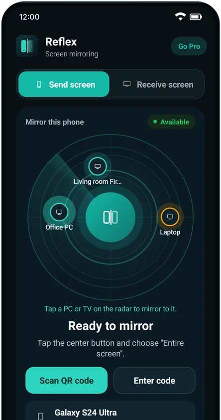
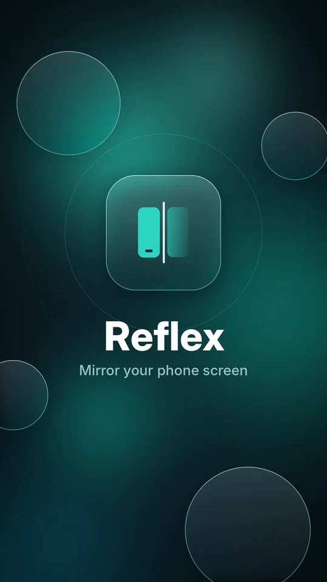
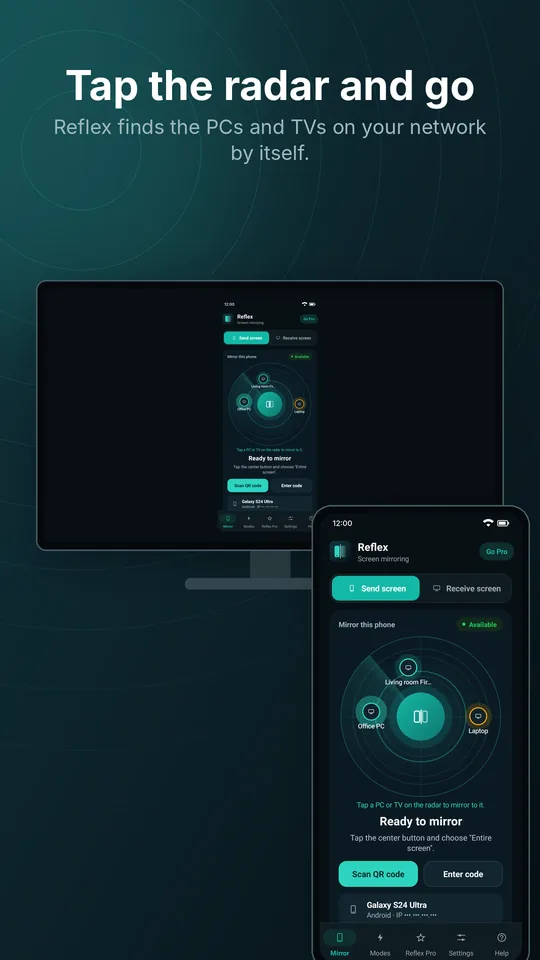
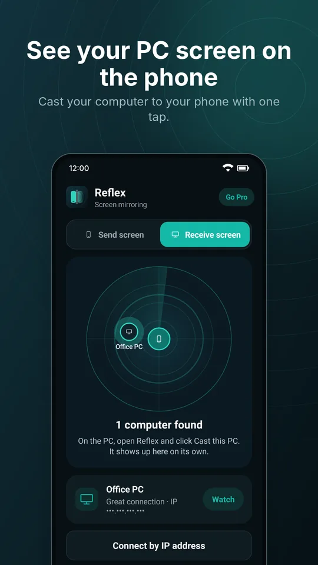
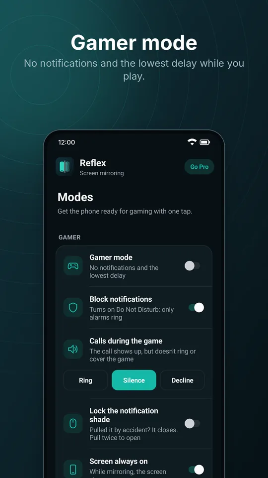
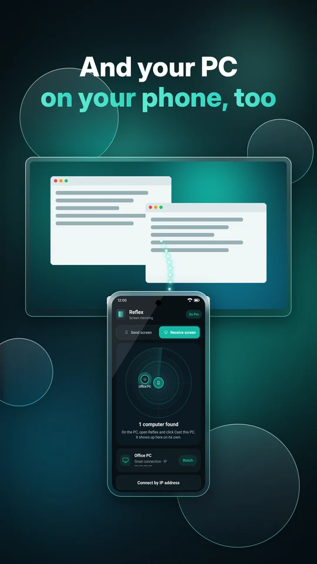
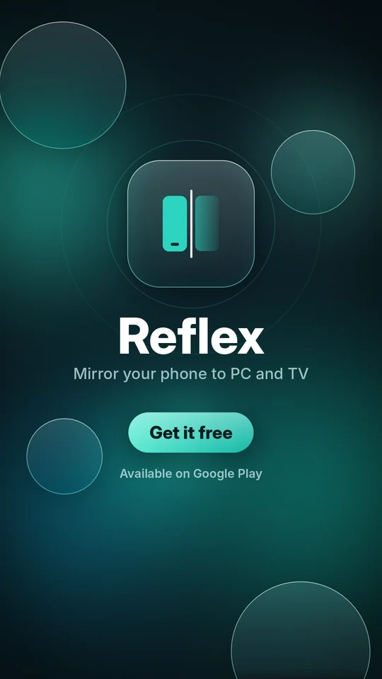

Android phone
The app that sends the screen. It also receives the PC screen.
Version 1.15.5
Google Play Download the APKThe website APK includes controlling the phone with the PC mouse and keyboard.
Free · no ads · no cable
Picture and sound from your Android on your computer and TV, over Wi-Fi. Open Reflex on both devices, tap the radar and you're done.
Phone with Android 10 or newer · PC with Windows 10 or 11 (64-bit) · Fire TV and Android TV

Install it on your phone and on the device where you want to see the screen. The links always download the newest version, and then Reflex updates itself.
The app that sends the screen. It also receives the PC screen.
Version 1.15.5
Google Play Download the APKThe website APK includes controlling the phone with the PC mouse and keyboard.
Shows the phone screen, records it, controls games and casts the PC to the phone.
Version 1.15.4
Download Reflex-Setup.exeInstalls without an administrator password.
See your phone on the TV. Works on Fire TV Stick and Android TVs.
Version 1.15.4
Download Reflex-TV.apkOn the TV, type is.gd/reflextv in the Downloader app.
Made to be simple: no account, no cable and nothing to set up.
Your phone finds the PCs and TVs on your network by itself. You can also connect with a QR code or a code.
Videos, games and music play on the PC or TV with your phone's sound, at up to 60 fps.
Use your computer's mouse and keyboard to use the phone. Available in the website APK.
On the PC, click Cast this PC and see your computer on the phone screen.
Record what the phone shows as an MP4 video, right on the PC. Shortcut Ctrl+R.
No notifications, silenced calls, the lowest delay and PC keys mapped onto the game screen.
Show your phone on more than one PC or TV at the same time.
The picture goes straight from your phone to your PC inside your Wi-Fi. Nothing goes through servers and nothing is recorded outside your devices.






Download Reflex on your phone and on your PC or TV. The first time on the PC, allow Reflex on Private networks when Windows asks.
Keep the phone and the PC (or TV) on the same Wi-Fi network and open Reflex on both.
On the phone, tap the PC or TV shown on the radar and accept the Android notice. The screen shows up right away.
The free plan already does everything, with no ads. Reflex Pro makes the picture sharper.
Free forever
7-day free trial
Pro monthly or yearly subscription
You subscribe in the phone app, on the Pro tab, through Google Play. The price for your country is shown there.
Yes. The free plan mirrors in HD 720p, with sound, no ads and no time limit. Reflex Pro is optional and unlocks Full HD and Maximum quality, with a 7-day free trial.
No cable needed. The phone and the PC (or TV) just need to be on the same Wi-Fi. The picture goes straight from one device to the other, without going through the internet.
Yes. This notice shows up for new programs that don't have many downloads yet. Click More info and then Run anyway.
Check that both are on the same Wi-Fi (guest networks often block this). On the PC, allow Reflex on Private networks in Windows Firewall. If it still doesn't show up, connect with the QR code or the code option on the phone.
The Google Play version updates through the store. The website APK includes controlling the phone with the PC mouse and keyboard and updates itself. You can't have both at once: uninstall one before installing the other. To subscribe to Pro, use the Google Play version.
Phones with Android 10 or newer, 64-bit Windows 10 or 11 PCs, Fire TV Stick and Android TVs.
No. Nothing from your screen is sent to the internet, to us or to third parties. See the Privacy Policy.